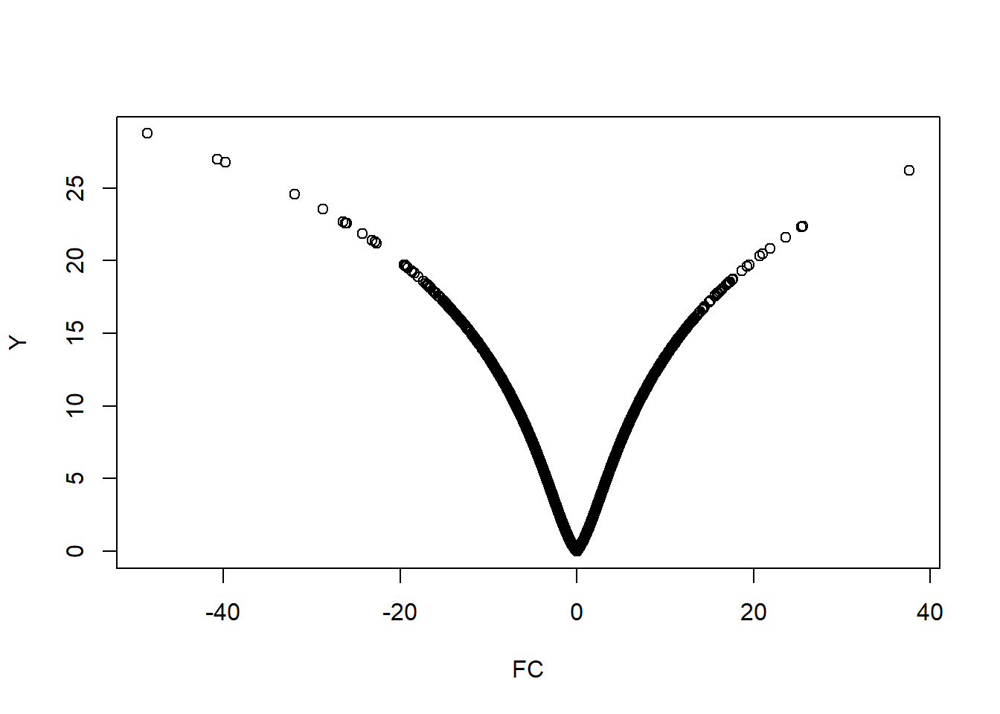
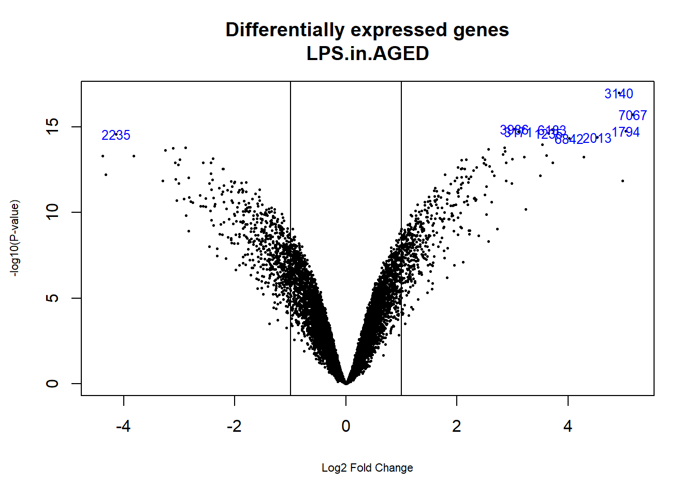

El motivo más habitual para el que se suelen utilizar microarrays es la búsqueda de genes cuya expresión cambia entre dos o más condiciones experimentales, por ejemplo a consecuencia de un tratamiento, una enfermedad u otras causas (distintos tiempos, distintas lineas celulares, …).
El problema consiste en identificar estos genes y suele denominarse selección de genes diferencialmente expresados (“DEG”) o bien comparación de clases.
El problema de seleccionar genes diferencialmente expresados se traduce de manera casi inmediata al problema estadístico de comparar variables y, en años recientes, se han desarrollado un gran número de métodos estadísticos para resolverlo. La mayoría son extensiones de los métodos estadísticos clásicos, pruebas-t o análisis de la varianza, adaptados en uno u otro sentido para tener en cuenta las peculiaridades de los microarrays.
Aunque el problema de la selección de genes diferencialmente expresados puede relacionarse directamente con la realización de pruebas estadísticas, en el caso de los microarrays, el hecho de que haya dos tecnologías que miden la expresión de dos formas distintas hace que se deba diferenciar la metodología a emplear en cada caso. Los arrays de dos colores combinan dos muestras en un chip y generan una medida de expresión relativa. Esto hace que para comparar dos muestras de un mismo individuo sean la opción naturalmente más apropiada
En el caso de querer comparar muestras independientes de diferentes individuos los arrays de un color son la mejor opción. Evidentemente, lo más común será disponer de una sola técnica y tener que adaptar los análiaisis estadísticos a la misma.
Vamos a plantear un posible esquema de trabajo, para situar la mejor opción en cada caso:
Recordemos que una vez se han hecho los experimentos con microarrays y obtenida la señal, los datos que se disponen son los logaritmos del valor detectado por el escaner.Esto hace que algunas operaciones que se realicen tengan en cuenta esta característica. Segun si la comparación a realizar se llevará a cabo con datos independientes (2 muestras, casos 1 y 2) o con datos dependientes (muestras apareadas, casos 3, 4) algunas medidas naturales o razonables para la comparación de expresiones son las siguientes:
Consideremos la tabla siguiente que representa una matriz de expresión simplificada que contiene las expresiones relativas (por ejemplo entre tejido tumoral y sano del mismo individuo) de 5 genes en 6 muestras.
Podemos calcular las medidas descritas para el caso de una muestra para decidir si un gen está expresado o no lo está. Se discutirá más adelante como precisar esto pero de momento nos quedaremos con la idea de que si la medida escogida es (cercana a) cero el gen no está diferencialmente expresado y si es mayor o menor que cero si que lo está. Nos referimos a “cero” porque estamos hablando de logaritmos de razones: si la expresión es la misma en ambas condiciones el cociente es uno y su logaritmo es cero.
Vale la pena insistir en el concepto de expresión diferencial: no nos preocupa cual es la expresión del gen en una u otra muestra sinó si son distintas.
La tabla anterior sugiere que podría considerarse el gen A está diferencialmente expresado (promedio y t–test altos) mientras que el gen B o el D no lo están (promedio y test-t próximos a cero). Los genes C y D pueden llevar a conclusiones contradictoria según nos basemos en el promedio o el test t.
Si se observan los valores del test t del gen C se concluye que el gen no aparenta estar diferencialmente expresado. Si en cambio se observa su promedio parece que si que lo esté.
En el gen E pasa exctamente lo opuesto. La explicación de estas aparentes contradicciones se halla en el error estándar. En el gen C es muy elevado, debido a que el valor (20) es probablemente un “outlier”. En el gen D el error estándar es muy bajo por lo que, al encontrarse en el denominador del t-test aumenta artificialmente su valor.
Vamos a plantear la forma como se aborda este problema en el estudio de datos de microarrays. Dadas las características propias de este tipo de datos se consideran otras formas de estimar el error estándar que no sean tan sensibles a valores extremos o muy bajos.
Consideremos el gen \(g\). Si llamamos:
Podemos considerar dos variantes para el test-t:
| Test |
| Test-t Global |
| Test-t específico |
\end{center}
En la práctica muchos métodos de selección de genes diferencialmente expresados han acabado buscando un compromiso entre ambas aproximaciones para lo que proponen o derivan fórmulas que de alguna forma ponderan o combinan dos estimaciones del error estándar: una basada en todos los genes y otra específica de cada gen. La tabla siguiente ilustra como algunos de los métodos más utilizados en la bibliografía incorporan esta idea.
Al hecho de incluir un coeficiente que tenga en cuenta la variabilidad de todos los genes en el array para estimar el error estándar de cada gen se le denomina moderación de la varianza (“variance shrinkage”) y es una de las aproximaciones en que existe cierto consenso (Allison et al. (2006)) acerca de que sirven para mejorar la selección de genes diferencialmente expresados.
Como ejemplo utilizaremos el conjunto de datos celltypes y supondremos que disponemos ya de los datos normalizados y filtrados almacenados en un objeto expressionSet.
Este proceso es sencillo de hacer siguiendo los pasos del capiítulo anterior. Para simplificar el ejemplo una vez cargados y normalizados filtraremos los datos usando funcion nSFilter de la librería genefilter con sus opciones por defecto, lo que nos dejara un total de 10254 sondas en vez de las 45101 originales.
library(affy)
library(genefilter)
affyPath<- "datos/celltypes/celfiles"
cellTypesTargets<- read.AnnotatedDataFrame("targets.txt", sep="\t", path=affyPath)
cellTypesTargets$filename = file.path(affyPath, row.names(cellTypesTargets))
cellTypesRaw <- read.affybatch(cellTypesTargets$filename, phenoData=cellTypesTargets)
eset_rma <- rma(cellTypesRaw)
Filtered <- nsFilter(eset_rma)
eset_rma_filtered <- Filtered[["eset"]]
save(eset_rma, eset_rma_filtered, file="datos/celltypes/celltypes-normalized.rma.Rda")Si consideramos que el campo treat del objeto contiene la información de los grupos a comparar (ratones estimulados con LPS frente a los que no han sido tratados), podemos realizar un primer análisis utilizando el test-t. Para ello utilizaremos el la función rowttests del paquete genefilter que realiza un test \(t\) sobre cada una de las filas (genes) de una matriz de expresión.
stopifnot(require(Biobase))
load (file="./datos/celltypes/celltypes-normalized.rma.Rda")
my.eset <- eset_rma_filtered
grupo_1 <- as.factor(pData(my.eset)$treat)
stopifnot(require(genefilter))
teststat <-rowttests(my.eset, "treat")
print(teststat[1:5,])## statistic dm p.value
## 1424378_at -10.67399 -1.11137 8.7153e-07
## 1417675_a_at 20.73906 0.94516 1.5047e-09
## 1436530_at 9.23140 1.49439 3.2917e-06
## 1428603_at -3.48821 -0.40134 5.8405e-03
## 1458888_at 0.70837 0.23435 4.9489e-01Cuanto mayor sea el valor absoluto del estadístico \(t\) mayor es la probabilidad de que el gen esté diferencialmente expresado.
Como hemos visto en la sección anterior dos medidas naturales para la selección de genes son el promedio de “log-ratios”, o la diferencia de promedios en el caso de muestras independientes, o el valor del estadístico de test (\(t\)-test) de una o dos muestras según si se trata de muestras apareadas o independientes respectivamente. Los primeros estudios de microarrays eran muy costosos y se hacían con pocas o incluso ninguna réplica por condición experimental. En estas situaciones la única forma fiable de detectar una diferencia de expresión era a traves del “log-ratio” o su diferencias.
Rápidamente se puso en evidencia que para poder obtener los genes que estaban realmente diferencialmente expresados era preciso disponer de un soporte estadístico que permitiera tener en cuenta la variación aleatoria existente entre muestras.
En la práctica esto se reduce a afirmar que si, además de la diferencia de expresión entre las condiciones experimentales, se lleva a cabo un test estadístico dispondremos de una medida objetiva, el p–valor que nos servirá para decidir qué genes se declaran diferencialmente expresados, a saber, aquellos en los que el p–valor del test sea inferior a un cierto umbral como 0.05 o 0.01.
Como es sabido, un test estadístico procede decidiendo rechazar la hipótesis nula si el p–valor es más pequeño que el nivel de significación del test.
Siguiendo con el ejemplo anterior podemos ordenar los resultados de los tests en base a los p–valores:
## statistic dm p.value
## 1449383_at -48.610 -2.04493 3.2766e-13
## 1451421_a_at -40.722 -1.44518 1.9093e-12
## 1415929_at -39.770 -0.81288 2.4152e-12
## 1450826_a_at 37.622 5.14799 4.1939e-12
## 1448303_at -31.924 -2.28376 2.1406e-11Ahora podríamos seleccionar, por ejemplo los genes cuyo p–valor fuera inferior a 0.01
Esto deja un total de {r} dim(selectedTeststat)[1] con un p–valor inferior a 0.01
Si se opta por computar los valores de significación (p–valores) de los genes, resulta interesante comparar el tamaño del cambio del nivel de significación estadístico. El “volcano plot” es una representación gráfica que permite ordenar los genes a lo largo de dos dimensiones, la biológica, representada por el “fold change” y la estadística representada por el logaritmo negativo del p–valor.
En la escala horizontal se representa el cambio entre los dos grupos (en escala logarítmica, de manera que la regulación positiva o negativa se representa de forma simétrica). En la escala vertical se representa el p–valor del test en una escala logarítmica negativa, de forma que los p–valores más pequeños aparecen mayores.
Así pues puede considerarse que el primer eje indica impacto biológico del cambio (a más efecto biológico mayor “fold-change”) y el segundo muestra la evidencia estadística, o la fiabilidad del cambio.
Como veremos más adelante en esta sección, el paquete limma permite realizar volcano-plots de forma sencilla a partir de los resultados de un anàlisis, pero para hacer un volcano plot tan sólo se necesita una lista de p-valores y los efectos (“fold-change”) asociados.
La figura (ref?)(fig:volcano0) muestra un “volcano-plot” para este ejemplo de los “celltypes” para la comparación “LPS” frente a “Medium”.

También podemos adaptar alguna función “ad-hoc” como la siguiente, tomada de :
library(ggrepel)
# plot adding up all layers we have seen so far
volcanoP<- function (de,log2FoldChange, pvalue,
diffexpressed=NULL, col=NULL, delabel=NULL){
ggplot(data=de, aes(x=log2FoldChange, y=-log10(pvalue), col=diffexpressed, label=delabel)) +
geom_point() +
theme_minimal() +
geom_text_repel() +
scale_color_manual(values=c("blue", "black", "red")) +
geom_vline(xintercept=c(-0.6, 0.6), col="red") +
geom_hline(yintercept=-log10(0.05), col="red")
}
diffexpressed <- ifelse(abs(teststat$statistic)>10, TRUE, FALSE)
label <- rep(NA, length(diffexpressed))
label[diffexpressed] <- rownames(teststat)[diffexpressed]
volcanoP (de=teststat, log2FoldChange=teststat$statistic, pvalue=teststat$p.value,
diffexpressed = diffexpressed, delabel = label)Tal como se ha indicado más arriba, para realizar un buen test suele controlarse la probabilidad de error de tipo I (de falsos positivos) y buscar, de entre los tests candidatos, aquellos que tengan una menor probabilidad de error de tipo II, o equivalentemente una mayor potencia. A partir de este planteamiento existe, en el contexto estadístico estándar, multitud de formas de determinar cual debe ser el tamaño muestral necesario para obtener una potencia dada fijados el tamaño de efecto (“fold-change”) y la probabilidad de error de tipo I.
En el caso de los microarrays se han desarrollado diversas fórmulas para realizar cálculos de este tipo, pero la compleja estructura de los datos microarrays hace que sean relativamente discutibles.
Simon (Simon et al. (2003)) sugiere la fórmula siguiente que es una generalización de las fórmulas clásicas para problemas de dos muestras:
El tamaño total requerido para detectar genes diferencialmente expresados en al menos una diferencia \(\delta\) con una probabilidad de error de tipo I (FP), \(\alpha\) y una probabilidad de error de tipo II (FN) \(1-\beta\) se calcula: \[ n=\frac{4(z_{\alpha/2}+z_\beta)^2}{(\delta/\sigma)^2}, \] donde \(z_\alpha\) y \(z_\beta\) son los percentiles 100\(\alpha/2\) y 100\(\beta\) de la distribución Normal \(N(0,1)\) y \(\sigma\) es la desviación estandar de un gen dentro de una clase (de un grupo). Obviamente \(\sigma\) es siempre desconocida por lo que, sin una muestra piloto con que estimarla el calculo e más imaginativo que realista.
Además de esto, el número de arrays usualmente recomendado queda lejos de la cantidad asequible para la mayor parte de los experimentos (Lee and Whitmore (2002),Tibshirani (2006)). Lo que muchos usuarios hacen a la práctica, es buscar un equilibrio entre los costes y la reproducibilidad y, de hecho, tienden a usar una cantidad fija de arrays tal como 3 o 5 sin consideraciones adicionales.
Por ejemplo si ponemos \(\alpha=0.001\), \(1-\beta=0.95\), \(\delta=1\) y estimamos \(\sigma\) entre todas las muestras el número de réplicas biológicas que necesitaremos será de 35.8.
El análisis de microarrays se realiza en base gen a gen e involucra múltiples tests, miles probablemente. Esto significa que, a medida que crece el número de genes, la probabilidad de declarar erroneamente al menos un gen diferencialmente expresado va en aumento, y si no se realiza algún tipo de ajuste el número de falsos positivos será tanto más alto cuantos más genes estemos analizando.
Hay muchas formas de intentar controlar estas probabilidades de error y puede verse un excelente revisión en Dudoit Dudoit, Shaffer, and Boldrick (2003)).
De forma simplificada consideramos las dos aproximaciones más utilizadas.
Una posibilidad es mirar de controlar la probabilidad de obtener al menos un falso positivo o “Family-wise-error-rate (FWER)”. El más popular de estos métodos de control es la corrección de Bonferroni, consistente en multiplicar el p–valor por el número de tests realizados. La misma Dudoit y muchos otros autores han desarrollado variantes de los métodos clásicos de ajuste FWER usando por ejemplo tests de permutaciones.
El criterio FWER es quizás demasiado restrictivo dado que el control de los falsos positivos implica un considerable incremento de falsos negativos. En la práctica, sin embargo, muchos biólogos parecen estar dispuestos a aceptar que se produzcan algunos errores, siempre y cuando esto permita realizar descubrimientos. Por ejemplo un investigador debe considerar aceptable cierta pequeña proporción de errores (digamos del 10 al 20%) entre sus descubrimientos. En este caso, el investigador está expresando interés en controlar el porcentaje de falsos descubrimientos (FDR), es decir lo que es la proporción de falsos positivos sobre el total de genes inicialmente identificados como expresados diferencialmente. A diferencia del nivel de significación que queda determinado antes de examinar los datos, la FDR es una medida de confianza a posteriori ya que emplea información disponible en los datos para estimar las proporciones de falsos positivos que han tenido lugar. Si se obtiene una lista de los genes expresados diferencialmente en los que el FDR se controla hasta, digamos, el 20%, cabe esperar que el 20% de estos genes representen falsos positivos. Lo cual supone un enfoque menos restrictivo que controlar el FWER.
La decisión de controlar el FDR o el FWER depende de los objetivos del experimento. Si, por ejemplo, el objetivo es la captura de genes es razonable permitir cierta cantidad de falsos positivos y es preferible seleccionar FDR. Si por el contrario se trabaja con una lista de un tamaño menor al deseado para verificar la expresión de ciertos genes específicos, entonces el FWER es el criterio apropiado.
El ejemplo siguiente muestra como se realiza el ajuste de p–valores usando el paquete multtest de Bioconductor para ajustar por los métodos de Bonferroni (FWER), Benjamini & Hochberg (FDR) o Benjamini & Yekutieli (BY, FDR).
stopifnot(require(multtest))
procs <- c("Bonferroni","BH", "BY")
adjPvalues <- mt.rawp2adjp(teststat$p.value, procs)
names(adjPvalues)## [1] "adjp" "index" "h0.ABH" "h0.TSBH"## statistic dm p.value rawp Bonferroni BH
## 1449383_at -48.610 -2.04493 3.2766e-13 3.2766e-13 3.3598e-09 3.3598e-09
## 1451421_a_at -40.722 -1.44518 1.9093e-12 1.9093e-12 1.9578e-08 8.2553e-09
## 1415929_at -39.770 -0.81288 2.4152e-12 2.4152e-12 2.4766e-08 8.2553e-09
## 1450826_a_at 37.622 5.14799 4.1939e-12 4.1939e-12 4.3005e-08 1.0751e-08
## 1448303_at -31.924 -2.28376 2.1406e-11 2.1406e-11 2.1950e-07 4.3900e-08
## 1418645_at -28.746 -4.12687 6.0446e-11 6.0446e-11 6.1981e-07 1.0330e-07
## BY
## 1449383_at 3.2969e-08
## 1451421_a_at 8.1007e-08
## 1415929_at 8.1007e-08
## 1450826_a_at 1.0550e-07
## 1448303_at 4.3077e-07
## 1418645_at 1.0137e-06Si seleccionamos los genes en base a su p–valor ajustado por ejemplo por le método de Banjamini y Yekutieli se obtienen los siguientes genes
## [1] 420En la sección anterior se ha discutido el uso del test \(t\) y sus extensiones para la selección de genes diferencialmente expresados en situaciones relativamente sencillas, es decir cuando sólo hay dos grupos.
En muchos estudios el número de grupos a considerar es más de dos y las fuentes de variabilidad pueden ser más de una, por ejemplo una puede ser el tratamiento pero otra puede ser la edad de los individuos o cualquier otra condición fijada por el investigador o derivadad de la heterogeneidad de las muestras.
En estas situaciones una aproximación razonable en problemas con una variable respuesta es el análisis de la varianza, discutido en el capítulo here. En esta sección se presenta una aproximación equivalente que de forma general se denomina el modelo lineal. Este método -que engloba el análisis d la varianza y la regresión- es uno de los más usados en estadística y ha sido popularizado en el campo de microarrays gracias a los trabajos de Gordon Smyth quien ha creado el paquete limma que se ha convertido en la herramiente más utilizada para el análisis de microarrays.
El modelo lineal (ver por ejemplo Faraway, Faraway (2004)) es un marco general para la modelización y el análisis de datos estadística.
EL método consiste en asumir una relación lineal entre los valores observados de una variable respuesta y las condiciones experimentales. A partir de aquí se obtienen estimadores para los parámetros del modelo y de sus errores estándar, y (con algunas condiciones extra) es posible hacer inferencia acerca del experimento.
La aplicación de modelos lineales puede ser visto como un proceso secuencial, con los siguientes pasos:
El esquema anterior se puede aplicar a casi cualquier tipo de situación experimental. En la sección siguiente se presentan un par de ellas.
Swirl es una mutación puntual que provoca defectos en la organización del embrión en desarrollo a lo largo de su eje dorsal-ventral. Como resultado, algunos tipos celulares se reducen y otros se expanden. Un objetivo de este trabajo fue identificar los genes con expresión alterada en el mutante Swirl en comparación con “wild zebrafish”.
| Array | Cy3 | Cy5 |
|---|---|---|
| 1 | W | M |
| 2 | M | W |
| 3 | W | M |
| 4 | M | W |
\[ \begin{array}{ccccc} y_1 &=&\alpha&+&\varepsilon _1 \\ y_2 &=&-\alpha&+&\varepsilon _2 \\ y_3 &=&\alpha&+&\varepsilon _3 \\ y_4 &=&-\alpha&+&\varepsilon _4\\ \end{array} \Longrightarrow \left( \begin{array}{r} y_1 \\ y_2 \\ y_3\\ y_4 \end{array} \right) = \underbrace{\left( \begin{array}{r} 1 \\ -1 \\ 1\\ -1 \end{array} \right)}_{\text{Matriz de Diseño}, \mathbf{X}} \alpha + \left( \begin{array}{r} \varepsilon_1 \\ \varepsilon_2 \\ \varepsilon_3\\ \varepsilon_4 \end{array} \right) \]
Los plásmidos IncHI codifican genes de resistencia múltiple a los antibióticos en S. enterica.
El plásmido R27 de la cepa salvaje es termosensible al transferirse.
Algunos fenotipos mutantes relacionados con hha y hns cromosómicos participan en diferentes procesos metabólicos de interés en la conjugación termoregulada.
El objetivo del experimento es encontrar qué genes se expresean diferencialmente en tres tipos de mutantes diferentes, \(M_1\), \(M_2\) y \(M_3\).
Este experimento debe ser planteado de forma diferente según el tipo de arrays (uno o dos colores) y qué comparaciones son las de mayor interés.
Modelo, \(\mathbf{y=X\alpha+\varepsilon}\), y contrastes \(\mathbf{C'\beta}\)
\[ \left( \begin{array}{r} y_1 \\ y_2 \\ y_3 \\ y_4 \\ y_5 \\ y_6 \end{array} \right) = \underbrace{\left( \begin{array}{rrr} 1 & 0 & 0 \\ 0 & 1 & 0 \\ 0 & 0 & 1 \\ -1 & 0 & 0 \\ 0 & -1 & 0 \\ 0 & 0 & -1 \end{array} \right)}_{\text{Matriz de Diseño}, \mathbf{X}} \left( \begin{array}{c} \alpha_1 \\ \alpha_2 \\ \alpha_3 \end{array} \right) + \left( \begin{array}{r} \varepsilon_1 \\ \varepsilon_2 \\ \varepsilon_3\\ \varepsilon_4 \\ \varepsilon_5\\ \varepsilon_6 \end{array} \right) \] \[ \left( \begin{array}{r} \beta_1 \\ \beta_2 \\ \beta_3 \end{array} \right) = \underbrace{\left( \begin{array}{rrr} 1 & -1 & 0 \\ 1 & 0 & -1 \\ 0 & 1 & -1 \end{array} \right)}_{\text{Matriz de Contraste}, \mathbf{C}} \left( \begin{array}{c} \alpha_1 \\ \alpha_2 \\ \alpha_3 \end{array} \right). \]
Modelo, \(\mathbf{y=X\alpha+\varepsilon}\), y contrastes \(\mathbf{C'\beta}\)
Parámetros del modelo: \[ \alpha_1= \mathbf{E}\left (log\frac{M_1}{M_2}\right ),\ \alpha_2= \mathbf{E}\left (log\frac{M_2}{M_3}\right ). \] \(\alpha_3\) no es necesaria: \(\log \left( \frac{M_1}{M_3}\right )=\log\left(\frac{M_1}{M_2}\right )-\log\left(\frac{M_2}{M_3}\right)\).
Contrastes: Algunas de las comparaciones deseadas son precisamente los parámetros. \[\begin{array}{ccc} \beta_1 &=& \alpha_1,\\ \beta_2 &=& \alpha_2,\\ \beta_3 & =& \alpha_1+\alpha_2. \end{array}\]
\[ \left( \begin{array}{r} y_1 \\ y_2 \\ y_3 \\ y_4 \\ y_5 \\ y_6 \end{array} \right) = \underbrace{\left( \begin{array}{rr} 1 & 0 \\ 0 & 1 \\ 1 & -1 \\ -1 & 0 \\ 0 & -1 \\ -1 & 1 \end{array} \right)}_{\text{Matriz de Diseño}, \mathbf{X}} \left( \begin{array}{c} \alpha_1 \\ \alpha_2 \\ \end{array} \right) + \left( \begin{array}{r} \varepsilon_1 \\ \varepsilon_2 \\ \varepsilon_3\\ \varepsilon_4 \\ \varepsilon_5\\ \varepsilon_6 \end{array} \right) \]
\[ \left( \begin{array}{r} \beta_1 \\ \beta_2 \\ \beta_3 \end{array} \right) = \underbrace{\left( \begin{array}{rrr} 1 & 0 \\ 0 & 1 \\ 1 & +1 \end{array} \right)}_{\text{Matriz de Contraste}, \mathbf{C}} \left( \begin{array}{c} \alpha_1 \\ \alpha_2 \end{array} \right). \]
Modelo, \(\mathbf{y=X\alpha+\varepsilon}\), y contrastes \(\mathbf{C^{1'}\beta}\), \(\mathbf{C^{2'}\beta}\)
Comparación entre tipo de mutantes \((\mathbf{C^{1'}\beta})\) \[\begin{array}{ccc} \beta_1^1 &=& \alpha_1-\alpha_2,\\ \beta_2^1 &=& \alpha_3-\alpha_2,\\ \beta_3^1 &=& \alpha_2-\alpha_3. \end{array}\]
Comparación entre cada mutantes y el wild type \((\mathbf{C^{2'}\beta})\) \[\begin{array}{ccc} \beta_1^2 &=& \alpha_4-\alpha_1,\\ \beta_2^2 &=& \alpha_3-\alpha_1,\\ \beta_3^2 &=& \alpha_2-\alpha_1. \end{array}\]
\[ \left( \begin{array}{r} y_1 \\ y_2 \\ y_3 \\ y_4 \\ y_5 \\ y_6 \\ y_7 \\ y_8 \end{array} \right) = \underbrace{\left( \begin{array}{rrrr} 1 & 0 & 0 & 0\\ 1 & 0 & 0 & 0\\ 0 & 1 & 0 & 0 \\ 0 & 1 & 0 & 0 \\ 0 & 0 & 1 & 0 \\ 0 & 0 & 1 & 0 \\ 0 & 0 & 0 & 1 \\ 0 & 0 & 0 & 1 \end{array} \right)}_{\text{Matriz de Diseño}, \mathbf{X}} \left( \begin{array}{c} \alpha_1 \\ \alpha_2 \\ \alpha_3 \\ \alpha_4 \end{array} \right) + \left( \begin{array}{r} \varepsilon_1 \\ \varepsilon_2 \\ \varepsilon_3\\ \varepsilon_4 \\ \varepsilon_5\\ \varepsilon_6\\ \varepsilon_7\\ \varepsilon_8 \end{array} \right) \]
\[ \left( \begin{array}{r} \beta_1^1 \\ \beta_2^1 \\ \beta_3^1 \end{array} \right) = \underbrace{\left( \begin{array}{rrrr} 1 & -1 & 0 & 0\\ 1 & 0 & -1 & 0\\ 0 & 1 & -1& 0 \end{array} \right)}_{\text{Matriz de Contraste}, \mathbf{C^1}} \left( \begin{array}{c} \alpha_1 \\ \alpha_2 \\ \alpha_3 \\ \alpha_4 \end{array} \right). \]
\[ \left( \begin{array}{r} \beta_1^2 \\ \beta_2^2 \\ \beta_3^2 \end{array} \right) = \underbrace{\left( \begin{array}{rrrr} 1 & 0 & 0 & -1\\ 0 & 1 & 0 & -1\\ 0 & 0 & 1 & -1 \end{array} \right)}_{\text{Matriz de Contraste}, \mathbf{C^2}} \left( \begin{array}{c} \alpha_1 \\ \alpha_2 \\ \alpha_3 \\ \alpha_4 \end{array} \right). \]
El objetivo de este experimento es estudiar el efecto de las citoquinas sobre la estimulación de una sustancia (LPS) y ver como esta relación se ve afectada por la edad.
Se trata de un modelo de un un factor (tratamiento, asignable por el individuo) y un bloque (edad, no asignable, prefijada en cada ratón). En la práctica el modelo equivale al del análisis de la varianza de dos factores.
| Array | Tratamiento | Edad |
|---|---|---|
| 1 | LPS | Viejo |
| 2 | LPS | Joven |
| 3 | Medio | Viejo |
| 4 | Medio | Joven |
| 5 | LPS | Viejo |
| 6 | LPS | Joven |
| 7 | Medio | Viejo |
| 8 | Medio | Joven |
| 9 | LPS | Viejo |
| 10 | LPS | Joven |
| 11 | Medio | Viejo |
| 12 | Medio | Joven |
\[ Y_{ij}=\alpha{i} +\varepsilon_{ij}, \quad i=1,...,4,\, j=1,2,3 . \] Esta parametrización parece más rígida pero se adapta mejor para responder a las preguntas planteadas.
Aquí se adopta la segunda parametrización.
Parámetros del modelo: \[ \begin{array}{ccc} \alpha_1&=& \mathbf{E} (log{LPS.Aged} ),\ \alpha_2= \mathbf{E} (log{Med.Aged} ),\\ \alpha_3&=&\mathbf{E} (log{LPS.Young} ),\, \alpha_4=\mathbf{E} (log{Med.Young} ). \end{array} \]
Contrastes: Preguntas que interesa responder: \[ \begin{array}{ccc} \beta_1^1 &=& \alpha_3-\alpha_1,\quad \mbox{Efecto del tratamiento en ratones viejos} \\ \beta_2^1 &=& \alpha_4-\alpha_2,\quad \mbox{Efecto del tratamiento en ratones jóvenes} \\ \beta_3^1 &=& (\alpha_3-\alpha_1)- (\alpha_2-\alpha_4),\quad \mbox{Interacción: diferencia entre efectos} \end{array} \]
Modelo lineal:
Modelo, \(\mathbf{y=X\alpha+\varepsilon}\), y contrastes \(\mathbf{C'\beta}\)
\[ \left( \begin{array}{r} y_1 \\ y_2 \\ y_3 \\ y_4 \\ y_5 \\ y_6 \\ y_7 \\ y_8 \\ y_9 \\ y_{10} \\ y_{11} \\ y_{12} \end{array} \right) = \underbrace{\left( \begin{array}{rrrr} 1 & 0 & 0 & 0\\ 1 & 0 & 0 & 0\\ 1 & 0 & 0 & 0\\ 0 & 1 & 0 & 0 \\ 0 & 1 & 0 & 0 \\ 0 & 1 & 0 & 0 \\ 0 & 0 & 1 & 0 \\ 0 & 0 & 1 & 0 \\ 0 & 0 & 1 & 0 \\ 0 & 0 & 0 & 1 \\ 0 & 0 & 0 & 1 \\ 0 & 0 & 0 & 1 \end{array} \right)}_{\text{Matriz de Diseño}, \mathbf{X}} \left( \begin{array}{c} \alpha_1 \\ \alpha_2 \\ \alpha_3 \\ \alpha_4 \end{array} \right) + \left( \begin{array}{r} \varepsilon_1 \\ \varepsilon_2 \\ \varepsilon_3\\ \varepsilon_4 \\ \varepsilon_5\\ \varepsilon_6\\ \varepsilon_7\\ \varepsilon_8 \end{array} \right) \]
\[ \left( \begin{array}{r} \beta_1^1 \\ \beta_2^1 \\ \beta_3^1 \end{array} \right) = \underbrace{\left( \begin{array}{rrrr} -1 & 0 & 1 & 0\\ 0 & -1 & 0 & 1\\ -1 & 1 & 1 & -1 \end{array} \right)}_{\text{Matriz de Contraste}, \mathbf{C}} \left( \begin{array}{c} \alpha_1 \\ \alpha_2 \\ \alpha_3 \\ \alpha_4 \end{array} \right) \]
Una vez se ha expresado el experimento como un modelo lineal: \[ \mathbf{E(y_g)=X\alpha_g},\quad \text{var}(y_g)=W_g\sigma_g, \] es posible usar la teoría estándar del modelo lineal (ver (faraway:2004?)) para obtener:
Los procedimientos de estimación y de inferencia no dependen de qué parametrización se ha adoptado, a pesar de que distintas parametrizaciones piedan dar lugar a distintos valores numéricos..
El enfoque del modelo lineal es flexible y potente:
Por otro lado hay que tener en cuenta que, si las suposiciones no se cumplen, entonces las conclusiones deben tomarse con precaución.
Y lo que es peor, aún siendo válidas las suposiciones del modelo los resultados pueden verse afectados por el tamaño de la muestra de forma que, en muestras pequeñas donde pueden haber variaciones más grandes es fácil que se obtengan valores \(t\) no significativos o, por el contrario, excesivamente significativos (si la variación es muy reducida).
La metodología desarrollada por Smyth (Smyth, Michaud, and Scott (2005)) basada en los resultados de L”onsted & Speed (Speed (2003)) está dirigida a abordar cómo hacer frente a estas debilidades.
Smyth (Smyth, Michaud, and Scott (2005)) considera el problema de la identificación de genes que se expresan diferencialmente en las condiciones especificadas en el diseño de experimentos de microarrays. Como hemos dicho repetídamente la variabilidad de los valores de expresión difiere entre genes, pero la naturaleza paralela de la inferencia en microarrays sugiere la posibilidad de usar la información de todos los genes a la vez para mejorar la estimación de los parámetros, lo que puede llevar a una inferencia más fiable.
Básicamente lo que propone Smyth (Smyth, Michaud, and Scott (2005)) es una solución en tres pasos:
El hecho de trabajar con logaritmos permite poner el punto de corte en el cero: A mayor valor positivo más probable es que el gen esté diferencialmente expresado. A mayor valor negativo, más probable es que no lo esté
El paquete de Bioconductor limma al que hemos hecho referencia en los párrafos anteriores implementa el método de Smyth para la regularización de la varianza lo que lo ha convertido en muy popular entre los usuarios de microarrays
El código siguiente muestra como se crea la matriz del diseño y los contrastes para realizar el análisis mediante modelos lineales;
Empezamos por la matriz de diseño.
## Aged.LPS Aged.MED Young.LPS Young.MED
## Aged LPS 80L.CEL 1 0 0 0
## Aged LPS 86L.CEL 1 0 0 0
## Aged LPS 88L.CEL 1 0 0 0
## Aged Medium 81m.CEL 0 1 0 0
## Aged Medium 82m.CEL 0 1 0 0
## Aged Medium 84m.CEL 0 1 0 0
## Young LPS 75L.CEL 0 0 1 0
## Young LPS 76L.CEL 0 0 1 0
## Young LPS 77L.CEL 0 0 1 0
## Young Medium 71m.CEL 0 0 0 1
## Young Medium 72m.CEL 0 0 0 1
## Young Medium 73m.CEL 0 0 0 1
## attr(,"assign")
## [1] 1 1 1 1
## attr(,"contrasts")
## attr(,"contrasts")$lev
## [1] "contr.treatment"Usando los nombres de las columnas de la matriz de diseño creamos los contrastes
require(limma)
cont.matrix <- makeContrasts (
LPS.in.AGED=(Aged.LPS-Aged.MED),
LPS.in.YOUNG=(Young.LPS-Young.MED),
AGE=(Aged.MED-Young.MED),
levels=design)
cont.matrix## Contrasts
## Levels LPS.in.AGED LPS.in.YOUNG AGE
## Aged.LPS 1 0 0
## Aged.MED -1 0 1
## Young.LPS 0 1 0
## Young.MED 0 -1 -1Una vez definida la matriz de diseño y los contrastes podemos pasar a estimar el modelo, estimar los contrastes y realizar las pruebas de significación que nos indiquen, para cada gen y cada comparación, si puede considerarse diferencialmente expresado.
La penúltima instrucción ejecuta el proceso de regularización de la varianza utilizando modelos de Bayes empíricos para combinar la información de toda la matriz de datos y de cada gen individual y obtener estimaciones de error mejoradas.
El análisis proporciona los estadísticos de test habituales como Fold–change \(t\)-moderados o \(p\)-valores ajustados que se utilizan para ordenar los genes de mas a menos diferencialmente expresados.
A fin de controlar el porcentaje de falsos positivos que puedan resultar del alto numero de contrastes realizados simultaneamente los p–valores se ajustan de forma que tengamos control sobre la tasa de falsos positivos utilizando el metodo de Benjamini y Hochberg (Benjamini and Hochberg (1995)).
La funcion topTable genera para cada contraste una lista de genes ordenados de mas a menos diferencialmente expresados.
topTab_LPS.in.AGED <- topTable (fit.main, number=nrow(fit.main), coef="LPS.in.AGED", adjust="fdr")
topTab_LPS.in.YOUNG <- topTable (fit.main, number=nrow(fit.main), coef="LPS.in.YOUNG", adjust="fdr")
topTab_AGE <- topTable (fit.main, number=nrow(fit.main) , coef="AGE", adjust="fdr")Se puede visualizar los resultados mediante un volcano plot que, en este caso, representa en abscisas los cambios de expresión en escala logarítmica y en ordenadas el estadístico \(B\) en vez de el “menos logaritmo” del p-valor.
coefnum = 1
opt <- par(cex.lab = 0.7)
volcanoplot(fit.main, coef=coefnum, highlight=10, names=fit.main$ID,
main=paste("Differentially expressed genes",colnames(cont.matrix)[coefnum], sep="\n"))
abline(v=c(-1,1))